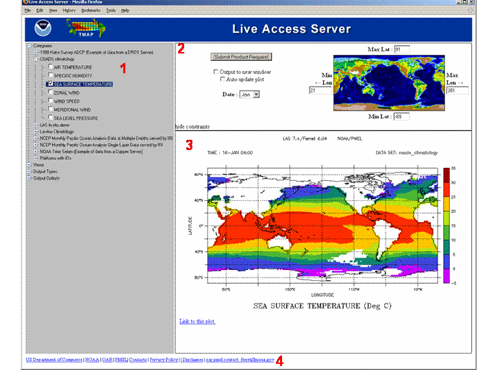

Introduction to LAS version 7 User Interface
The v7.0 UI: a transitional step
The v7.0 user interface, released as an Alpha product herein together with the Armstrong package, is a transitional step. The v7.0 UI incorporates new and more flexible programming paradigms (e.g. Ajax), while retaining major elements of the style of user interactions found in v6. For example the v7.0 UI has retained the characteristics of the LAS v6 UI that require the user to understand the abstraction of a "VIEW" (e.g. select from lat-long, lat-depth, depth-time, ...). With the release of v7.1 support for the v6/Armstrong UI will be dropped altogether (though the XML configuration files will be backward compatible to the greatest degree that is feasible). Significant advances will be incorporated in how the user will interact with the UI. The improvements to the UI are a work in progress at the present time. Suggestions and discussion are welcome at las_users@noaa.gov
LAS v7 UI layout
|  |
|
Getting a product from LAS
Example: Create a 2D xy color plot of Sea Surface Temperature from the coads climatology dataset.
|
||||
|
||||
|
||||
|
||||
|
|
|
Changing the options for a product
Example: How to modify the default values LAS uses to create a product. In this example, we will change the specified color pallete for our SST plot, as well as create a larger image:
First, to change the output size of the plot - open up the "Output Options" menu item and change the "Plot Size", as shown below:
Similarly, to change the the output
palette, simply change that menu item as shown below:
Once
those changes are made, hit the "product request" button: |
|
And
this plot is our new result |
There are many other options that the user can play with, and it's important to note that these options can be "view" specific or possibly even dataset specific.
Using the LAS V7 Map selection tool
The version 7 LAS User interface introduces a new Map selection too - based entirely on javascript.
| V7 Map selection tool snapshot |
The user has two options in terms of how the product is request and where the requested product is sent:
|
The user also has two options in terms of how to select a region on the map:
|
|
|
{kind=link}